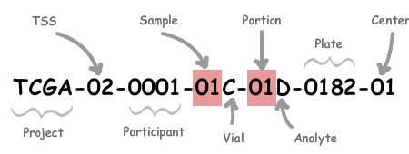
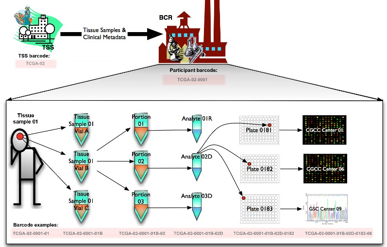
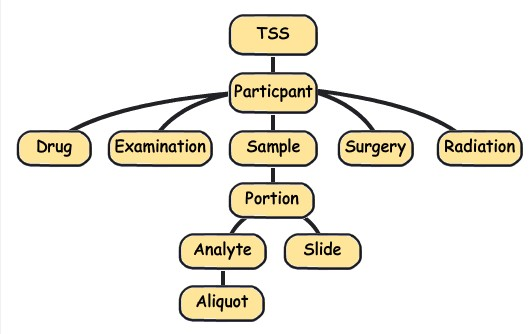
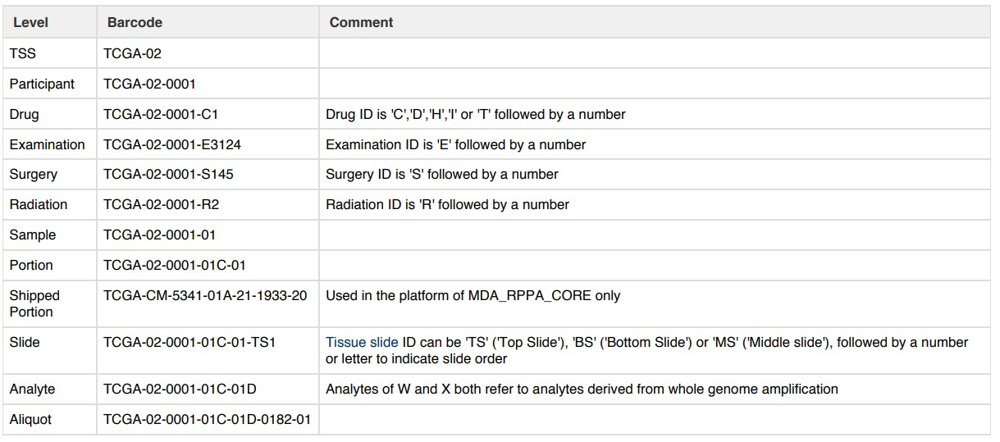

接触和分析过TCGA数据的朋友肯定会经常处理TCGA barcode的7个编码信息，每个编码信息用横杠-隔开，如下所示：

接触和分析过TCGA数据的朋友肯定会经常处理TCGA barcode的前15位（有时12位），实际从上图可以看出TCGA的barcode设计总共有28位之多。
每一个短横杠衔接的都是含不同意义的序列，如下图

图中总结了TCGA中从样品到数据处理流程：
BCR从TSS收到参与者的样本和他们相关的元数据。然后BCRs分配人可读的IDs（barcode），也就是TCGA barcode给参与者的元数据和样本。TCGA barcode用来把扩展到整个TCGA网络中的数据联系在一起，因为IDs可以唯一识别一个特定样本的一组结果。
具体的解释如下表：
| Label | Identifier for | 解释 |
|---|---|---|
| Project | Project name | 来自哪个项目: 如TCGA、TARGET等等 |
| TSS | Tissue source site | 样品来自哪个组织机构：01 代表International Genomics Consortium, 更多见：TSS |
| Participant | Study participant | 样品唯一编号(可以理解为一个病人唯一编号） |
| Sample | Sample type | 样品来自人体组织类型，01-09表示肿瘤样本，10-19表示normal type，20-29表示control samples,如：01代表Primary Solid Tumor， 更多见：SampleType |
| Vial | Order of sample in a sequence of samples | 一份样品被分割成好几份，表示第几份，通常是A-Z编号 |
| Portion | Order of portion in a sequence of 100-120 mg sample portions | 每份样品再分割成不同的小样品：01-99等等编号，代表第几份 |
| Analyte | Molecular type of analyte for analysis | 实验数据来源分子类型，如R代表 RNA，D代表DNA等等，更多见：Portion / Analyte Codes |
| Plate | Order of plate in a sequence of 96-well plates | 96孔序列中板的顺序，4个数字组成 |
| Center | Sequencing or characterization center that will receive the aliquot for analysis | 数据由哪个机构分析：如 01代表The Broad Institute GCC,更多见：Center |
其中比较重要的，用于区分样本类型的是 sample。
此外除了上述的barcode还有表示其他信息的barcode，整体的组织形式如下：

下表显示了不同barcode，所代表的不同意义：层次结构级别：
